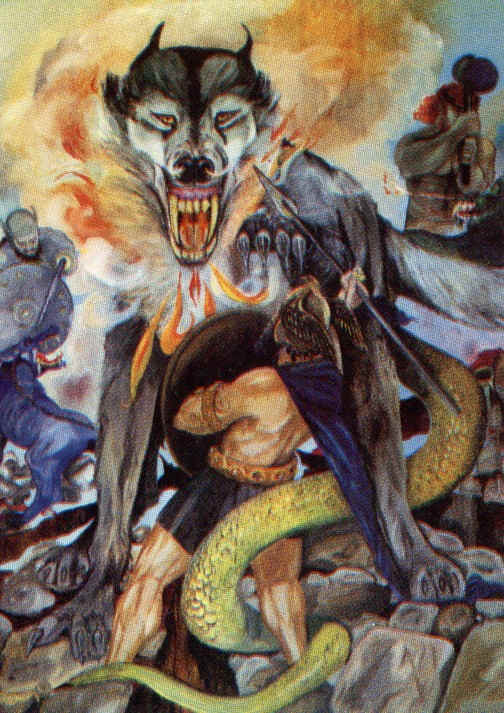
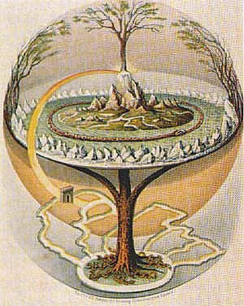
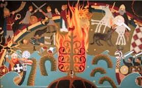

If you think you’ve seen it all, just wait for Ragnarok, the end of times foreseen by the ancient Vikings. In it, the world turns into a vast, smoking battlefield. Featuring a wolf with a mouth as big as the sky, a giant with a burning sword and... a kind tree.
But who knows, one of
these days, the REAL Ragnarok might unfold. Ragnarok means ‘fate of the
gods’. It is the Viking version of the Apocalypse. Believe us: you don’t
want to be around when it happens.
It
all starts with a winter that just won’t stop. For three years in a
row, summer doesn’t come. All there is, is this harsh, terrible winter. It
is freezing cold, so you stay indoors, and get bad-tempered. As a consequence,
all kinds of arguments break out among men, even within the closest families.
Morality and mutual respect seem to break down. In case you’re interested:
what you’re witnessing is the ‘Fimbulwinter’, the first clear sign the
world is about to end.
Now, brace yourself.
You’re going to witness the first in a series of HUGE apocalyptic surprises.
For what on Earth is that? Suddenly, you see a huge wolf flying overhead. It
flies across the sky, like some weird kind of airplane. That, my
friend, is the mythical wolf Skoll. And before you know what’s happening, it
eats up the Sun. And wait -- there goes the moon, too!
From
that moment on, it gets crazier and crazier. The ground starts to
shudder. Trees are launched, even complete mountains fall over. And then,
suddenly, you see this outlandishly dressed guy emerging out of nowhere. It is
Loki, supreme bad guy for the Vikings. He is set free by the earthquakes --
and ready to pick a fight.
Loki is not alone.
Next to him, you see another supernatural wolf. It’s Loki’s son, Fenrir.
The beast has a HUGE mouth: its lower jaw scrapes the ground, while the upper
jaw touches the sky.
Right after that, you
hear a sharp, screeching sound. Could that be… a cock crowing? Yes: it is.
In fact, there are three of them. Cock number one, a red animal, crows to the
giants. Cock number two, a golden bird, calls in the gods. And cock number
three, a rusty brown animal, raises the dead from hell.
You
rub your eyes. This can’t be happening, you keep telling yourself.
But it is. Next thing you know, the sea starts to roar violently. There’s a
colossal tsunami, and then, the next bad guy enters the stage. A gargantuan
serpent rises out of the sea. It is Jormungand, a venomous snake out of hell.
From that moment on,
things go from bad to worse. Everywhere around the globe, all kinds of gods
and beasts and demons and giants start showing up. Some come in ships, others
on horseback, still others come walking. They’re all heavily armed, with
divine swords, magical spears, and all kinds of other supernatural stuff. And
they seem to be in a bad mood.
Now, if you happen to
live in Norway, better take shelter. For Norway is where all these weird
creatures are heading. That’s where the final battle is to be fought, on a
battlefield called Vigrid.
In
total amazement, you watch on TV what’s unfolding. From the east
comes the huge sailing ship Naglfar, commanded by the giant Hymir. Look, there
comes Loki again, aboard another huge boat, full of demons he brought in from
hell. From the south comes Surt, another sinister warrior leading an army of
giants. Don’t try to talk him out of it: he’ll instantly incinerate you
with his mighty sword, which is as hot as the Sun itself. Carelessly, Surt
turns every city he passes into a smoking rubble.
And there’s more to
come. In the south, people witness how a fierce hell hound named Garm rushes
in to team up with the fire giants. In the meantime, you won’t be able get a
night’s rest: the pitch-black sky is filled with eerie woes, explosions and
echoes. Why do these apocalypses always come with all of these special
effects?
On the battlefield,
one lonely god hangs around. It’s the good Viking god named Heimdall. And
when he sees all these giants and demons and beasts approaching, he picks up
his horn and blows it, to wake up the gods. It will be some sound: it is heard
throughout the entire world.
So:
the gods wake up. There’s Odin, and Thor, and all the others. What do
they do? Well: they sit down, have a few drinks and have a meeting.
|  |
On Earth, we will of
course not notice this. What we do notice, is another weird apocalyptic event.
You may not know this, but somewhere in heaven, there’s a very special tree
called Yggdrasil. It is the Tree of the World, the living embodiment of
everything and everyone that ever was and ever will be on this planet. And
now, Yggdrasil shivers. From its deepest root up to its highest branches, it
shakes. You should feel this shaking from deep within: it is your very
existence itself, that shivers. Everything on Earth and in heaven and hell
will quiver, the Viking legends foresee.
Meanwhile, the gods
finally arrive at the battlefield. They look exactly as you would expect them
to: dressed in shiny, golden armor, and riding beautiful white horses. The
upper god Odin rides at the head.
Then, it’s battle
time. It goes something like this:
Odin
jumps Fenrir, while Thor is attacked by Jormungand and Freyr clashes
with Surt, but unfortunately Freyr gave his sword to Skirnir, so Surt wins,
while Tyr kills Garm but then dies himself, just like Heimdall and Loki fight
each other to death and Thor dies after killing Jormungand with his hammer
Mjollnir, while Odin is eaten by Fenrir, after which Vidar gets so pissed off
he kills Fenrir by tearing off its head, which annoys Surt so much he sets the
entire world on fire, killing everyone else.
And after that, all land sinks into the sea. Finally, it gets quiet.
So, exit mankind? And
bye-bye gods? Not quite. Miraculously, a few gods survive. And fortunately,
they belong to the good guys: Odin’s brother and sons Vili, Vali and Vidar,
Thor’s sons Magni and Modi and a few other blokes, named Honir, Balder and
Hod. Even more miraculously, two people survive. They’re named Lif and
Lifthrasir -- the Viking version of Adam and Eve, so to say. They have endured
the events by hiding deep within the tree Yggdrasil.
And it gets better. After a while, up rises an entire new world from the sea. It’s a heavenly place, with lush fields and plenty of corn waiting to be harvested. The Sun is reborn, and so is the moon. Balder takes it on him to lead the gods of this new world, and Lif and Lifthrasir worship Balder and his gods.

Slowly,
the world is repopulated by the descendents of Lif and Lifthrasir.
Fortunately for them, World No. 2 is a much better place than our current
world ever was. For one thing, evil no longer exists. There will be no
sword-fighting, no nit-picking, gossiping, cheating, stealing, killing or
breaking the speed limit with your car. Finally, mankind will live in complete
and utter harmony.
It’s a pity you
won’t be there to join in. According to the ancient Viking writings called
the Edda, which describe all these events, you will have died in the fire
unleashed by Surt. Or, if you somehow managed to survive that, you would have
drowned in the big sinking of all land afterwards.
But
even then, your soul still exists. By now, you should find yourself in
the renewed, totally reconstructed Viking heaven. There are many rooms there,
and their quality varies wildly. If you’re very lucky, you get to live with
the gods in a place called Gimli, which is a huge, sunlit building with a
golden roof. Or you might find yourself in Brimir, another beautiful place
with drinks galore.
But on the other
hand, if you behaved badly during life, you could end up in a dark hole called
Nastrond. That means ‘corpse strand’, a description that pretty much says
it all. Nastrond is a dark dungeon, with walls and roofs made of snakes. You
will have to wade through a river of venom for eternity.
No
offense to the Vikings, but somehow we at Exit Mundi have some doubts
about the reality of Ragnarok. It seems to be just what it is: a Viking myth.
Not too many people believe in it anymore -- if there are any people who still
take it literally, that is.
On the other hand,
plenty of modern day people seriously accept the idea that one day, the world
will be terminated by four horsemen and a horde of huge locusts from a pit.
That, at least, is how it goes in the Christian end of times, the Apocalypse
of St. John.